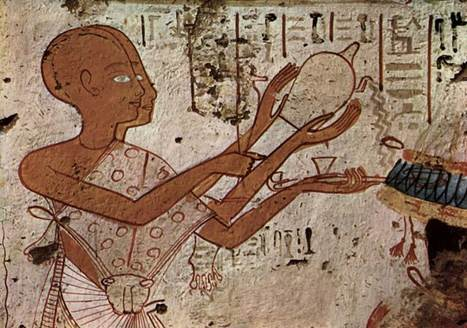
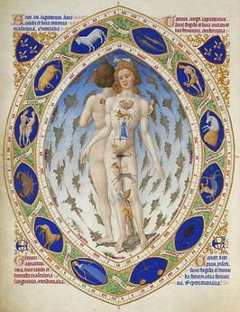
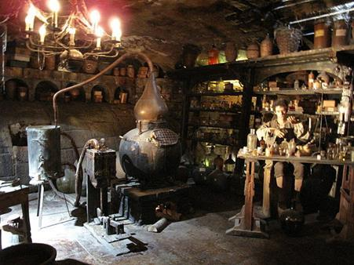

| 図説 アロマテラピーの歴史 | |
| 山崎 なつ子 | |
| WAKANKOSO (2015) | |
「図説アロマテラピーの歴史」
山崎なつ子著
目次
まえがき
アロマテラピー検定の勉強をしていて思ったのが、図や資料がなくてイメージがわきにくいなぁということでした。
アロマテラピーや香水の歴史を調べると、たくさんの資料が見つかりました。昔の蒸留装置や香料の写真、絵画など、とてもおもしろかったです。香水やリキュール、香り文化について調べたくわしい内容は、アロマテラピー検定の内容から大きくはみ出してしまうので、検定に出題される内容にそったものだけまとめ、本にしてみました。どうぞお楽しみください。詳細版は、まとまったらまた出版しようと思っています。
※本書でピックアップした内容は、アロマテラピー検定の項目から選んでいますが、検定内容に準拠しているわけではありません。
アロマテラピーの源流
人類と香り
図1．ヤグルマギク
人類と香りは、はるか遠い昔から深い関係がありました。ネアンデルタール人の遺跡の墓地からヤグルマギクなど花の花粉がまとまって見つかりました。薬草として使ったとも言われますが、死者に供えられたのではないかともいわれています。
エジプト人と香料

図2．香油を捧げるエジプトの神官
古代メソポタミアやエジプトでは、神々にささげるものとして、乳香（フランキンセンス）などの香りが重視されました。香りが祈りや感謝を神々のもとに届け、よい香りが神々を喜ばせると考えていたからです。
儀式では、香木を火にくべて焚いたり（焚香、ふんこう）、燃えにくい素材と混ぜて燃やし、くゆらせて使いました（薫香、くんこう）。宗教儀式の際に、花や樹脂で香りをつけた油「香油」を塗って、香りで身を清めることもありました。
香料は、最初は宗教儀式だけに使われていましたが、徐々に王や貴族が医療や美容、おしゃれとして香料を使うようになっていきました。

図3．乳香（フランキンセンス）
乳香は、フウロソウ目カンラン科ボスウェリア属の樹木、モツヤクジュなどから分泌される樹脂です。古代オリエントでは「乳香は神、没薬は救世主、黄金は王」と言われ、黄金より貴重なものだと考えられていました。燃やすと黒い煙を出しますが、火が消えると優雅で心を落ち着かせる香りを放ちます。
別名のフランキンセンスは、真正純粋（フランク）な香煙（インセンス）を意味しています。
図4．乳香がとれる木
ニュウコウジュは、アラビア南部やアフリカ東北部産地の名産品です。香料の産地は「幸福なアラビア」と呼ばれていました。
図5．ツタンカーメン王のミイラ
古代エジプト人は死後の世界とよみがえりを信じていたので、魂が帰ってきたときの入れ物として、遺体に防腐処理をほどこして保存しました。ミイラには没薬（ミルラ）やシナモンなど、防腐作用のある香料が使われました。「ミイラ」ということばは「ミルラ」に由来しています。それぞれの香料に意味や使い方があったらしく、乳香はミイラ作りには使われませんでした。
図6．没薬（ミルラ）
没薬は、フウロソウ目カンラン科コンミフォラ属の樹木、ミルラノキなどからとれる樹脂です。古代エジプトでは、神々への捧げもの、ミイラ作りの他に、芳香軟膏、油やお酒の香り付けにも使われていました。没薬や乳香は、漢方薬としても古くから知られ、日本のお香にも使われます。
図7．没薬を採取する様子
乳香や没薬などの樹脂は、木に傷をつけ、にじみ出た樹脂が固まったものを採取します。没薬がとれるモツヤクノキは、主にソマリアに生える植物です。
インド伝統医学・アーユルヴェーダ
図8．インド神話に登場する医神ダンヴァンタリ（外科の知識を伝えた神）
『アーユルヴェーダ』は、現在もインドやスリランカで行われる伝統医療です。
古代インドでは、自然の神々を崇拝するバラモン教が広まり、『リグ・ヴェーダ』（紀元前15世紀頃?）などの４つの経典（ヴェーダ）がまとめられました。ここから生命に関する知識をまとめたものが『アーユルヴェーダ』です。アーユルヴェーダがひとつの体系としてまとめられたのは、早くても紀元前5〜 6世紀頃だと考えられています。
『アーユルヴェーダ』は医療だけでなく、宇宙観、自然観、死生観を含む広い哲学で、より良い生命を目指す思想です。病気の治療と予防だけでなく、健康の維持・増進や若返り、さらには幸福な人生、不幸な人生とは何かということまで追求します。治療には、薬草（ハーブ）や鉱物を使った内服薬や、香油・薬油を使ったマッサージ、食事指導や生活指導も行われます。
アーユルヴェーダで使われる香辛料や香料は、仏教とともに日本に伝わりました。奈良の正倉院には、大陸から伝わったアーユルヴェーダの薬が収められています。
ソロモン王とシバの女王の伝説
図9．ソロモン王とシバの女王の会見（ステンドグラス、エチオピアのホーリー・トリニティー大聖堂）
香料に関する伝説として、『旧約聖書』のシバの女王がよく知られています。『旧約聖書』はヘブライ語・アラム語で書かれたユダヤ教・キリスト教の正典で、紀元前5世〜前4世紀頃にはある程度まとまっていたといわれています。
「シバの女王」は伝説の女王で、香料がたくさんとれる豊かな国を治めていたといわれます。エチオピアやイエメンあたりという節もありますが、よくわかっていません。『旧約聖書』には、シバの女王がイスラエル王国のソロモン王を訪問したエピソードが、次のように語られています。
ソロモン王の名声を聞き、興味を持ったシバの女王は、王を訪問して難問を出して試します。ソロモン王は女王のすべての問いに答え、女王はその知恵と豊かさに圧倒され、白檀などの高価な香料、金などの宝物を贈りました。
この時ふたりの間にできた子どもが、のちにエチオピアの王になったともいわれています。
｢医学の父｣ヒポクラテス
図10．ウィーンの薬局の看板（１９世紀オーストリア。左から、健康と衛生の女神ヒュギエイア、古代ギリシャの医師ヒポクラテス、花と豊穣の女神フローラ、古代ローマの医師ガレノス）
古代の医学では、病気は悪霊や天罰と考えられ、神に祈りを捧げたり呪術で病気を治そうとしました。これが変わったのが、古代ギリシャです。
古代ギリシャの医師たちは、それまで医学を迷信や呪術から切り離し、臨床と観察を重んじる経験科学へと発展させました。その代表が「医学の父」といわれる医師ヒポクラテス（紀元前460年ごろ -紀元前370年頃）です。古代ギリシャの医師たちの研究は、ヒポクラテスの死の100年ほど後に、『ヒポクラテス全集』（ラテン語:Corpus Hippocraticum）にまとめられました。この全集には、ヒポクラテスだけでなく、彼が属したコス派の医師や、様々な学派の医師たちの論文が収録されています。
ヒポクラテスは自然治癒を重視し、数種類ある体液のバランスが崩れると病気になると考えました。また、人間の置かれた環境が健康に影響すると考え、環境や食事、運動、ふだんの生活の大切さを説きました。
「植物学の父」テオプラストス
図11．テオプラストス『植物誌』の口絵（17世紀）
ヨーロッパの植物やハーブの研究で、近世まで重視されていたのが、古代ギリシャのテオプラストスと古代ローマの医師ディオスコリデスです。
テオプラストス（紀元前371年--紀元前287年）は、大哲学者アリストテレスの弟子で、幅広い分野の研究を行いました。テオプラストスという名は、アリストテレスが彼の語りの上手さからつけたあだ名で、｢神のごとく語る｣という意味です。
ほとんどの著作が失われてしまいましたが、植物学の本『植物誌』（ラテン語: Historia Plantarum）は現代まで伝わり、その先駆的な研究から｢植物学の祖｣と呼ばれています。『植物誌』はラテン語に翻訳され、ヨーロッパで広く読まれました。
テオプラストスは、多くの植物を観察して詳細に研究しました。それぞれの植物の特徴をとらえ、その特徴にそって分類し、植物学の基礎を作りました。
アレクサンドロス大王の東方遠征と東西文化の交流
図12．マケドニア軍と戦うアレクサンドロス三世（ポンペイの壁画）
ハーブや香辛料が広まるには、安全に遠くまで貿易ができなければいけません。アレキサンダー大王の帝国やローマ帝国、アラビアのアッバース朝など、広くて平和な国が続いたときに、香料やハーブ、香辛料も流通し、薬学や医療も発展しました。
アレクサンドロス大王・アレキサンダー大王の名で知られるアレクサンドロス三世は、小さなマケドニア王国の王でしたが、東方の大帝国アケメネス朝ペルシャを滅ぼし、中央アジアからインド北西部まで征服し大帝国を築きました。アレクサンドロス大王が東を目指した理由は、香料を手に入れるためだったともいわれています。
この遠征で東西の人と文化が交流し、東と西の文化が融合してオリエント文化が生まれます。ハーブや香辛料の交易も盛んになり、医学や錬金術（化学）、占星術（天文学）も発展しました。
図13．ヘレニズム文化を支えたアレクサンドリア図書館（内部のイメージ）
アレクサンドロス三世は、エジプトに港町アレクサンドリアを建設しました。そしてアレクサンドロス三世の死後、部下のプトレマイオスがエジプトを統治しました。この子孫が女王クレオパトラです。
またアレクサンドリアには、歴史に残る巨大な図書館がありました。世界中の書物を集めた図書館で、『ヒポクラテス全集』は、ギリシャ医学の文献を集めてここでまとめられたといわれています。
アレクサンドリア図書館には研究所や薬草園もあり、多くの学者が集まり、医学も進歩しました。
インドなどの東洋の香料は、アレクサンドリアを通ってエジプトに持ち込まれました。
古代エジプト最後の女王クレオパトラ
図14．クレオパトラ7世（紀元前40〜30年頃）
古代エジプト最後の女王クレオパトラ（クレオパトラ7世）は、エジプトとギリシャの豊かな文化を受けつぐ才女で、とても魅力的な女性だったといわれています。当時の歴史家は、「打ち解けて話をする時、彼女が発揮する優雅な魅力は、生来の優しさとあいまって、言葉や仕草に趣を添え、刺激的な誘惑に満ちていた。」と書きのこしています。
ローマ帝国の基礎を築いたカエサルやアントニウスを魅了しましたが、洗練されたエジプトの香り文化は、クレオパトラの魅力を引き立てたことでしょう。当時は焚くお香（焚香）と身体に塗る香油が一般的に使われましたが、香油には肌を保護する効果もありました。
クレオパトラが愛用していたのは、官能的な動物性香料・麝香（じゃこう、ジベット）や、植物性香料の菖蒲（しょうぶ、カラムス）、肉桂（にっけい、シナモン）、没薬などをブレンドした「キフィ」で、薔薇の香りのする風呂に入っていたといわれています。
『新約聖書』の香りの逸話
図15．幼子イエスに会う東方の三博士（17世紀スペインの絵画）
『新約聖書』（ラテン語:Novum Testamentum）はキリスト教の聖典で、1世紀の終わりから4世紀頃にまとめられました。もともとギリシャ語で書かれていましたが、ヨーロッパでは、ローマ帝国の公用語だったラテン語の聖書が読まれました。キリスト教で「救い主」とされたイエス・キリストの生涯を中心にしたストーリーで、誕生のエピソードはクリスマスの劇で上演されます。
『新約聖書』では、イエスが生まれた時に空に星が輝き、東からそれを見た博士たちが会いにきたと書かれています。彼らはイエスに黄金・乳香・没薬を捧げました。香料の乳香と没薬が聖なるものと考えられており、黄金と同じくらい重視されていたことが分かります。
博物学者プリニウス
図16．プリニウス『博物誌』の写本（12世紀）
古代ローマについての当時の資料に、ガイウス・プリニウス・セクンドゥス（大プリニウス、22 / 23年-- 79年）の『博物誌』があります。この本では香油や香り付きワイン、バラなどの香り文化、ハーブや医学についても取り上げています。古代ローマの貴重な資料として、のちのヨーロッパに大きな影響を与えました。
大プリニウスは、大自然や人の文化、芸術など、世界のあらゆることに興味をもち、百科全書的な37巻の大著『博物誌』をまとめました。自分で見たことだけでなく、人の著作からの引用や伝聞もあり、事実と伝説が混ざった風変わりな書物です。ドラゴンやユニコーン、半魚人など、架空の生き物も紹介されていて、当時のローマでは実在すると思われていたことが分かります。
暴君と言われたローマ皇帝ネロ
図17．プリニウスが「プラエネステのバラ」とよんだローザ・ガリカ（ピエール＝ジョゼフ・ルドゥーテ『バラ図譜』より）
古代ローマではバラの花がとても愛されていましたが、特にプリニウスが仕えた皇帝ネロは、バラ愛好家として知られています。彼はぜいたく好きとしてしられ、キリスト教徒を迫害した暴君としても名を残した人物です。
香料好きとしても知られ、妻ポッパエアの葬式では、当時の有数の香料産地だったアラビアの産出量10年分を使ったといわれています。
皇帝ネロだけでなく、歴代皇帝やローマ市民の香料好きは大変なもので、あまりにたくさん香料を使うので、宗教儀式用の香料が足りなくなるほどだったそうです。
図18．古代ローマのカラカラ浴場（紀元前3世紀）の内部の創造図
香油を使ったマッサージは、古代ローマの浴場でも行われていたようです。古代ローマ人は日本人に負けずおとらず風呂好きでした。遠くから水道がひかれ、皇帝が大浴場を建設しました。大浴場だけでなく小さな浴場もあり、市民は毎日のように通っていました。
当時の浴場では、入浴前に運動して汗を流し、体に油を塗って汚れを落とします。その後、風呂やサウナを楽しみました。
「薬学の父」ディオスコリデス
図19．『薬物誌』の「ウィーン写本」（6世紀前半）
古代ローマではギリシャ医学がうけつがれ、ギリシャ人の医師が活躍しました。古代ローマで有名なギリシャ人医師は、ディオスコリデスとガレノスです。ディオスコリデス（40年頃 - 90年）は、偉大な本草書（薬草の本）『薬物誌』（ラテン語:De Materia Medica libriquinque）全5巻を書きのこしました。『薬物誌』は、日本では「マテリア・メディカ」という通称でも呼ばれます。ディオスコリデスは、ネロ帝の時代に軍医として各地を旅し、実際に見て、使った薬草や鉱物について書きしるしました。
ディオスコリデスは広く情報を集め、『薬物誌』で1,000種類近い薬を扱っています。うち植物薬が一番多く600種類、鉱物約90種類、動物薬が約35種類です。
香料の効果を高く評価しており、「香油・香膏（香りのする軟膏）は衆知のように、他の薬物と配合したり、滴下したり注入したり、匂いをかいだりすれば、ある種の病気に効果的である。」と書いています。これは現代のアロマテラピーそのものだといっていいでしょう。第1巻では、香料植物や香油・香膏、香りのよい樹脂などの薬効や使い方が紹介されています。香料を油やワインに漬けこみ、香りを移して利用しました。
この時代、植物を水蒸気蒸留して抽出する香料「精油」は、まだありませんでした。植物から精油を取り出すには、アラビア錬金術の登場を待たなくてはいけません。
『薬物誌』は迷信を排除した合理的で実用的な本草書で、ヨーロッパ・アラビアで、1500年以上薬学の最高の文献として使われていました。
『薬物誌』は多くの写本が作られましたが、一番古いものとしては、ビザンツ帝国で515年頃作られた「ウィーン写本」（コンスタンティノープル写本）が知られています。滅亡した西ローマ帝国の皇女だった貴婦人アニキア・ユリアナに献上された、羊皮紙製の豪華な写本です。もともと『薬物誌』には植物の図版はありませんでしたが、「ウィーン写本」には美しい植物画がつけ加えられました。
この写本は、16世紀に神聖ローマ帝国（ドイツ）の皇帝が購入し、ウィーン宮廷図書館に収蔵されたので、「ウィーン写本」と呼ばれています。
西洋医学に君臨したガレノス
図20．『薬物誌』の「ウィーン写本」より、名医たち。上段中心がガレノス、右がディオスコリデス
古代ローマの最高の医師として尊敬された人物、それがガレノス（129年頃 - 200年頃）です。古代ギリシャ・ローマの医学はガレノスによって整理され、体系化されました。ガレノスの医学はとてもよくまとまっていたので、西洋ではルネッサンスまで1500年以上も利用され、絶対権威として君臨しました。
ガレノスは古代ギリシャの｢医学の父｣ヒポクラテスを高く評価し、4種類の体液のバランスが崩れることで病気になると考えました。自然治癒を重視しましたが、ヒポクラテスより積極的に薬を使い、さまざまな形の薬を作りました。水と油からつくるコールドクリームも、ガレノスが考案したといわれています。
アレクサンドリアでは人体解剖が行われましたが、当時のローマでは許されなかったので、ガレノスは動物解剖を行い、そこから人間の体の仕組みを推測しました。（キリスト教世界では人体解剖が禁止されたので、古代ローマからルネッサンスまで、ほとんど行われませんでした。）
ガレノスはいくつか解剖学上の新しい発見をしましたが、動物解剖からの推測だったこともあり、部分的には間違いもありました。ガレノスがまとめたギリシャ・ローマの医学は、ローマ帝国滅亡後ヨーロッパから失われ、アラビアに伝わりました。
中国医学と本草書
図21．李時珍『本草綱目』（16世紀、明）
さて、ここまで西洋を見てきましたが、東洋はどうだったのでしょうか。中国を中心とする東洋でも独自の医学が発展し、『薬物誌』のような本草書がまとめられました。最古のものは漢の時代にまとめられた『神農本草経』で、365種類の薬が扱われています。『神農本草経』の原本は、現在は失われてしまいましたが、500年に南朝の陶弘景が再編纂したものが伝わっています。
明の時代には、ディオスコリデスの『薬物誌』とも比較される本草書、李時珍（1518年 - 1593年）の『本草綱目』（1578年）が書かれました。全52巻にのぼる大著で、1,892種類の薬が収録され、うち374種類は新しいものが取り上げられました。図版1,109枚、処方1万1,096種にのぼり、薬の正しい名称や産地、それまでの書籍での間違いの修正、作り方などが説明されています。
『本草綱目』は、中国医学の本草書で最も充実しているといわれ、日本にも輸入され漢方（日本の医学）に影響を与えました。中国の本草書は中世アラビアにも伝わり、アーユルヴェーダの本などといっしょに翻訳されています。
水蒸気蒸留法と精油の登場
蒸留法と錬金術
図22．象徴的に書かれた錬金術の絵（王は硫黄を、女王は水銀をあらわしています）
アロマテラピーでは「精油」や「芳香蒸留水」（ハイドロゾル）を使います。「精油」は、香料植物を水蒸気蒸留して作る揮発性の油「精油」、「芳香蒸留水」は香料植物といっしょに蒸留した香り付きの水です。このふたつは、どのようにして作られるようになったのでしょうか？両方とも水蒸気蒸留で作られますが、蒸留技術は錬金術によって発展したものです。
錬金術は、現代ではオカルトの一種だと思われていますが、化学は錬金術によって誕生したといわれています。つまり、化学の産みの親ですね。錬金術は紀元前3〜3世紀頃古代エジプトで始まり、化学が台頭するまで様々な技術を生み出しました。
錬金術は、人間が神と同じような完全な存在になるための神聖な術でした。古代の人々にとって、金属の精製や加工、染色やガラス製造、蒸留、建築など、すべての技術は「人間の技（わざ）」ではなく、｢神の技｣だったのです。錬金術師たちは、完全な金属である金や、不老不死・完全な健康をもたらす万能薬（エリクシル、エリクサー）の製造を目指して研究しました。錬金術師・化学者・薬剤師は区別されていませんでしたし、薬剤師は香料を扱っていたので、調香師でもありました。錬金術は化学であると同時に魔術でもあり、神秘的・宗教的な要素も少なくありませんでした。また、研究内容は、錬金術の秘密を守るために象徴や暗号を使って書かれていたので、よけいに不思議なものに見えたということもあるようです。
錬金術はアラビアに伝わって発展し、その後ヨーロッパに伝わりました。植物の精髄（エッセンティア）である精油や、ワインを蒸留したアルコール度数の高い蒸留酒も、錬金術によって生まれました。「アルコール」の「アル」はアラビア語の定冠詞で、「アルカリ」、「アルケミー」（錬金術）、「アランビック」（蒸留器）なども同じくアラビア語が語源のことばです。
図23．薔薇水入れ（12世紀イラン）
水蒸気蒸留法は、アラビアの錬金術師たちが8世紀おわりから9世紀初め頃に確立しました。蒸留装置を改良した人物として、8世紀の錬金術師ジャービル・イブン＝ハイヤーンの名が知られていますが、誰が発明したのかはわかっていません。アラビアの錬金術師・薬剤師たちが徐々に作り上げて技術なのでしょう。
アラビアでは、バラの芳香蒸留水「薔薇水」（バラ水）の製造が一大産業になり、薬として、香りのいい水として、また客人のもてなしなどに広く使われました。中世イスラムの宴会の様子の絵には、薔薇水入れのあるものが少なくありません。芳香蒸留水は医学でも研究され、12世紀の医師イブン・アルバイタールは、芳香蒸留水の薬効や蒸留器具について、詳しい説明を書き残しています。
アラビアの進んだ蒸留法は、ヨーロッパに伝わってさらに進化し、アルコールの蒸留も行われるようになりました。蒸留酒はヨーロッパで11世紀頃に誕生したようですが、むずかしい技術だったので、なかなか普及しなかったようです。
さらに、13世紀の錬金術師・医師アルナルドゥス・デ・ヴィラノヴァが、薬草（ハーブ）や樹脂、香辛料や花をアルコールと共に蒸留して薬用酒を作り、「ハンガリー王妃の水」などの香りのいい蒸留酒が作られるようになりました。これがのちに香水とリキュール発展したため、ヴィラノヴァは「リキュールの祖」と呼ばれています。
アラビア医学の権威イブン・シーナー
図24．アラビアの医師イブン・シーナー（右）と「リキュールの祖」ヴィラノヴァ（左）（15世紀ドイツの本草書より）
医学や錬金術は中世アラビアで発展しましたが、当時のヨーロッパはどんな様子だったのでしょうか。
5世紀末に西ローマ帝国が滅亡すると、西ヨーロッパのキリスト教徒はギリシャ・ローマの文化や学者達を激しく迫害し、アレクサンドリア図書館も破壊されてしまいました。学者たちはアラビアに亡命し、受けつがれたギリシャ・ローマ文化はこの地で花開きます。西洋中世では、文化の中心地はアラビアと周辺の地中海地域で、ヨーロッパは後進地域だったのです。
イスラム王朝のアッバース朝の時代は、平和だったおかげで貿易も盛んになり、世界中のハーブや香辛料が使われるようになりました。アーユルヴェーダの薬もたくさん導入されています。また豊かな香り文化があり、様々な香料がアラビアに集まりました。
アラビアでは医学も発展し、高名な医者がたくさん活動していました。哲学者・錬金術師でもあった医師イブン・シーナーは、西洋でもっとも有名な医学書『医学典範』（al-Qānūn fī al-Ṭibb）全5巻を書いた偉大な医師で、ヨーロッパではラテン語のアヴィセンナという名で知られています。（当時ヨーロッパでは、偉大な人物は尊敬をこめてラテン語名でよばれていました。）
『医学典範』は、古代ローマの医師ガレノスの医学をベースに各地の医学を取り入れたもので、とても分かりやすく使いやすい本でした。イブン・シーナーはアリストテレス哲学の研究者としても知られますが、アリストテレス哲学の考え方をいかして、ギリシャ・ローマの医学を体系化し、わかりやすくまとめたのです。アラビアではアーユルヴェーダの本も翻訳されていたので、イブン・シーナーの医学にはその影響もあるといわれています。
薬に関する部分は、古代ローマの医師ディオスコリデスの『薬物誌』をベースに東西の薬を取り入れています。イブン・シーナーは治療に芳香蒸留水や精油を使ったといわれますが、これは当時のアラビアでは一般的なことだったようです。精油を使った薬はとても高価でしたが、いい香りの薬は身分の高い人に喜ばれたのでしょう。
『医学典範』は、13世紀にラテン語に翻訳されてCanon（カノン）と呼ばれ、ヨーロッパでは17〜18世紀くらいまで大学の教科書に採用されていました。ガレノス医学はアラビアで発展し、地中海のサレルノ医学校などを通してヨーロッパに受けつがれたのでした。
イタリアのサレルノ医学校
図25．サレルノ医学校での授業風景のイメージ（16世紀）
中世アラビアの文化・技術は、アラビアに近い地中海の国々に伝わりました。地中海イタリアの港町サレルノは医学が盛んで、9世紀にサレルノ医学校（サレルノ医科大学）と呼ばれる学校が作られ、アラビアの進んだ医学が教えられました。多様な文化・宗教が認められた自由な気風の町で、女性医師のトロトゥーラという人物が医学校で教えていたといわれています。女性が大学で学んだり教えたりすることは、キリスト教世界では異例のことでした。医学校では、近くの修道院で翻訳されたアラビアの医学書が使われ、最新の医学が教えられました。
サレルノの医学は『サレルノ養生訓』という読みやすい本にまとめられ、ヨーロッパ中に伝わりました。これは詩の形で、生活上の注意やハーブの使い方、医学理論などを解説したもので、シンプルで読みやすい文章で書かれていました。
また、サレルノを治めるシチリア王によって12世紀に医師の免許再度が始まりましたが、これはアラビアの制度をまねたものでした。アラビアの文化なしでは、ヨーロッパ文化の次のステージはなかったといっていいでしょう。
蒸留酒と「アクア・ミラビリス」
図26．中世の本草書にえがかれたローズマリー（1500年頃）
アラビアから伝わった蒸留技術はヨーロッパで改良され、ワインから蒸留酒が作られるようになりました。火をつけると燃え、飲むと体があたたかくなる不思議な水、蒸留酒（アルコール）は、ラテン語で「アクア・ヴィテ」（生命の水）と呼ばれ、薬として珍重されました。蒸留酒を作る技術はとても難しいもので、秘伝として錬金術師や修道院に伝えられました。修道院では信者の治療も行っていたので、薬草園があることも多かったようです。また、アラビアや古代ギリシャ・ローマの写本の翻訳も行ったので、様々な知識・技術が伝えられていました。修道院の医療活動はイタリアで盛んで、｢修道院医学｣(僧院医学)とも呼ばれています。
14〜15世紀頃になると、イタリアやフランスの修道院で、薬草（ハーブ）や樹脂、香辛料や花をアルコールと共に蒸留して薬用酒を作るようになりました。今でいう養命酒のようなもので、ラテン語で「アクア・ミラビリス」（オー・アドミラブル、すばらしい水）、「エリクシル」（万能薬、霊薬）とよばれました。
図27．薬草系リキュール「シャルトリューズ」。フランスのグランド・シャルトルーズ修道院で作られたエリクシル（万能薬、薬用酒）の一種。110〜130種類のハーブ・香辛料が使われ、レシピは現在も門外不出。
ローズマリー水、ラベンダー水、メリッサ水、イタリアのサンタマリア・ノヴェッラ修道院の「女王の水」（アクア・デッラ・レジーナ）など、様々な「アクア・ミラビリス」がありました。メリッサ水はペスト予防に使われ、現在でも気付け薬として使われているそうです。気付け薬というのは、気分をシャキッとさせる薬のことで、他にハーブ酢も気付け薬として使われていました。
ローズマリー水は、ハンガリー王妃エルジェーベト愛用の品とされ、「ハンガリー女王の水」の名で人気となり、香りのいい薬としてヨーロッパ中の宮廷で使われました。
「アクア・ミラビリス」は、飲むだけでなく、外用薬（塗り薬）としても使われました。また中世ヨーロッパの人々は、お風呂に入るとペストにかかりやすくなると考え、あまり入浴しなかったので、水の代わりに体をふくためにも利用されました。
ペストの大流行
図28．ポマンダーを持つ貴婦人（16世紀）
中世ヨーロッパでは、ペストという伝染病が大流行し、社会に大きな影響を与えました。死亡率が高く、かかると肌が黒くなるこの病気は、当時はうつる理由も防ぐ方法も分かっていませんでした。14世紀のヨーロッパでは、ペストの大流行で全人口の約3割が命を落としたといいます。
当時は、悪い空気（瘴気）のせいで病気になるという考え方があり、香料や香辛料を入れた匂い玉「ポマンダー」や、ハーブや香辛料、花を容器に入れて熟成させた｢ポプリ｣、お香やハーブ酢が病気の予防に使われました。ペストが流行した街で悪事を働いた盗賊は、セージ、タイム、ローズマリー、ラベンダーなどを漬けこんだハーブ酢で感染を防いでいたといわれています。
14世紀になると、ハーブや香辛料を使った蒸留酒「アクア・ミラビリス」（すばらしい水）、「エリクシル」（万能薬、霊薬）、リクォーリ（リキュール）が、ペストに効く薬としてイタリアのサレルノなどで作られ、各地に輸出されました。
ローズマリーはペスト除けの効果があるといわれていたので、「ハンガリー女王の水」（ローズマリー水）はペスト対策としても使われたのかもしれません。
十字軍の遠征と東西文化の交流
図29．中世の写本（14〜15世紀頃）にかかれた第1回十字軍のエルサレム攻撃（1096年-- 1099年）の様子
進んだアラビアの文化は、十字軍によってヨーロッパ各地に広がることになります。「十字軍」とは、中東の聖地エルサレムをイスラム教徒から取り戻すための神の軍という意味です。エルサレムは小さな町ですが、ユダヤ教・キリスト教・イスラム教の聖地があり、今でもこの地をめぐる争いが続いています。
第1回十字軍はヨーロッパ各国が協力し、イスラム王朝のファーティマ朝を破ってイスラエルを占領しました。イスラエルは十字軍による虐殺で、血の海になったといわれています。
十字軍による侵略は、この後も何度も繰り返され、中東の進んだ美術・文化をヨーロッパにもたらすことになります。蒸留技術などの最新の錬金術や化学、アラビアの豊かな香り文化もこの時伝わりました。
大航海時代の幕開け

図30．大航海時代の帆船（復元）
香料や香辛料はとても高価で、ヨーロッパ人の生活には欠かせないものでした。産地であるインドや東南アジアとの貿易はアラビア商人とイタリアのヴェネツィア商人が独占し、高い値段で買わなければならなかったので、他の国はなんとか独自の貿易ルートを作り、産地と直接取引したいと考えました。こうして大航海時代が始まったのです。ヨーロッパからアフリカ大陸の南を回ってインドに行くルートが確立し、15世紀末にはアメリカ大陸の存在が知られるようになりました。
コロンブスは、ヨーロッパから西に船をすすめれば、インドにたどり着くと考えました。当時のヨーロッパでは、地球が丸いということを疑う人はいませんでしたが、大きさについての意見はまちまちで、インドにつく前に餓死してしまうのではないかともいわれました。コロンブスの計算は間違っていましたが、結果的にアメリカ大陸に到達したのです。ヨーロッパの帝国主義・植民地支配により、アメリカ大陸やアジアの香辛料生産地は、つらく苦しい時代をむかえます。
活版印刷とドイツの植物学
図31．レンベルト・ドドエンス著『クリュードベック』より、ヒヨス
15世紀半ばになると、ドイツで金属の活字を組み合わせて本を印刷する「活版印刷」が行われるようになりました。それまでは、本は手で書き写す「写本」しかなく、とても貴重なものでしたが、活版印刷でずっと安く作れるようになりました。最初に印刷されたのは聖書でしたが、ドイツでは植物の本も印刷され、植物書のブームがおこります。植物やハーブについて研究され、広く読まれるようになりました。
最初は、ディオスコリデス『薬物誌』の内容に植物の絵をそえたり、『薬物誌』に地元の植物を付け加えた本が主流でした。しかし、アメリカ大陸であたらしい植物がたくさん発見されたこともあり、新しい植物学が始まります。それまでは、薬草（ハーブ）や毒草のように、役に立つ植物以外は注目されませんでしたが、不思議な植物がたくさん見つかったことで、植物そのものが研究されるようになっていきました。
新しい植物学と植物書出版ブームは、最初ドイツで始まり、それが各国に伝わっていきます。
ドイツのレンベルト・ドドエンス、マティアス・デ・ロベル、カロルス・クルシウスが、当時の三大植物学者だといわれています。ドドエンスの植物書は江戸時代の日本に輸入され、大きな影響を与えました。
イギリスの植物学者・ハーバリスト
ジョン・ジェラード
図32．『本草書または一般の植物誌』より、コリアンダー
ジョン・ジェラード（1545年-- 1611 | 1612年）は、1597年に出版した『本草書または一般の植物誌』（The Herball or Generall Hiftorie of Plantes.）という植物の本で知られる人物です。本業は床屋外科で、趣味で植物やハーブを研究していました。（当時外科治療は、医師ではなく床屋の仕事でした。）
『本草書または一般の植物誌』はドイツの植物学者ドドエンスの本に、ジェラードの庭の植物やアメリカ大陸の植物を新しく付け加えたもので、1,480ページに及ぶ大著です。精密な植物の絵の多くは、ドドエンスなど他の人の本から引用されています。まだ「著作権」という考え方が始まったばかりだったので、他の人の本から勝手にコピーする人も多く、トラブルも多かったようです。印刷技術ができるまで、本は手書きの「写本」だけで大量生産ができなかったので、著作権というものはありませんでした。
ジェラードの本は内容の間違いや誤記が多かったため、ジェラードの死後薬剤師トーマス・ジョンソンが改訂し、実用的で役立つ本草書として流行しました。
図33．シェイクスピア『ハムレット』より。花飾りを持つオフィーリア（19世紀）
ジェラードの本は、同時代のシェイクスピアにも影響を与えたといわれ、シャイクスピア作品には様々な花やハーブが登場します。上の絵では、悲しみのあまり正気を失ったヒロイン・オフィーリアが、イラクサ、ヒナギクなど花飾りを手にしています。花のイメージが彼女の心や物語の意味を暗示し、豊かに彩っているのです。ヒナギクは恋占いに使われましたが、死をあらわす花でもありました。
ジョン・パーキンソン
図34．ジョン・パーキンソン『広範囲の本草学書』扉絵（旧約聖書の「エデンの園」）
ジェラードにならぶ近世イギリスの植物書として知られるのが、ジョン・パーキンソン（1567年-- 1650年）が1640年に出版した『広範囲の本草学書』（Theatrum Botanicum、直訳すると「植物の世界」という意味）で、当時最も完全で美しい本草書だといわれました。1,688ページに及ぶ大著で、地元イギリスの植物をふくめ、3,800種以上の植物が掲載されています。
パーキンソンは、チャールズ1世に仕えた薬剤師です。造園家としても有名で、新大陸の植物を収集していました。
ニコラス・カルペパー
図35．ニコラス・カルペパー著『英語で書かれた療法』タイトルページ（1652年）
ニコラス・カルペパー（1616年-- 1654年）は、イギリス初の一般人向けの医学の本、いわゆる「家庭の医学」を書いた人物です。それまで医学の本はラテン語で書かれ（ラテン語が読めるのは貴族と聖職者だけでした）、医学の秘密は医師が独占していましたが、カルペパーはこれを不満に思っていました。聖職者になるために大学で学んだカルペパーはラテン語ができたので、医学書を読むことができました。
そして、英語で一般の人向けの医学書『英語で書かれた療法』（The English Physitian: or an Astrologo-physical Discourse of the Vulgar Herbs of This Nation）という本を1652年に出版しました。
この本は、ジェラードやパーキンソンの本よりずっと安く、身近なハーブを使って病気の治療ができる本でした。ハーブやハーブ酢、ハーブワイン、芳香軟膏や芳香蒸留水、精油などを使った治療法が書かれています。
勝手に英語の医学書を出版したことで、カルペパーは医師たちに非難されましたが、『英語で書かれた療法』は庶民に支持されてベストセラーになり、のちにアメリカでも出版されました。

図36．人体と十二宮（天の星々）の関係を示した図（15世紀フランス）
カルペパーの『英語で書かれた療法』では、ハーブや人間の身体は、天の星々の影響を受けており、それを理解して診断・治療するよう語られています。ヨーロッパ伝統医学では、占星術は近代まで医学の一部であり、医学部では占星術が教えられていました。占星術的な医学は17世紀には衰え始めますが、完全に消えるのは先のことです。
カルペパーの時代は、ヨーロッパではちょうど近代医学が始まったころでしたが、伝統医学での治療も広く行われていました。
盛んだった精油の研究
図37．ヒエロニムス・ブランシュヴァイクの蒸留の本より、蒸留の様子（16世紀）
ヨーロッパの錬金術師たちは、植物からその本質である「精髄」を取り出して、薬として使おうと考えました。16〜18世紀頃は、精油の研究が盛んに行われ、蒸留法や蒸留物の利用法の本がたくさん出版されました。香料の主流は、古代から使われた樹脂や動物性香料から、植物から抽出した精油に変わっていき、精油や芳香蒸留水の医療への利用が研究されました。
薬剤師や錬金術師の工房にはもちろん蒸留装置がありましたが、貴族の家にもかんたんな蒸留装置が置かれるようになりました。庭や森でハーブや花を集め、自家製の芳香蒸留水や香水を作っていたようです。
日本の蘭方と精油
図38．水蒸気蒸留装置「らんびき」（江戸時代）
精油を使った医療は、江戸時代の日本に西洋医学に西洋医学「蘭方」が伝わった際に、いっしょに導入されました。日本人は精油の蒸留法を学び、蒸留装置「らんびき」を使って芳香蒸留水や精油を作り、薬として使っていたといわれています。今の日本薬局方に丁子油（クローブ油）、オレンジ油などの精油が収録されているのは、その名残でしょう。芳香蒸留水は、明治時代には「花の露」という優雅な名前で呼ばれました。
江戸の蘭方というと、『解体新書』などの近代的な解剖学の印象が大きいですが、同時に精油療法や植物療法も伝えられたのです。
貴族と香水文化
図39．革手袋を身につけた乗馬服姿のマリー・アントワネット（18世紀オーストリア）
当時のヨーロッパの文化の中心は、アラビアに近い地中海地域で、香水や蒸留も、まずイタリアなどの地中海地域で発展しました。1533年にイタリアのフィレンツェからカトリーヌ･ド･メディシスがフランスに嫁ぐと、洗練された文化がフランスに導入されました。カトリーヌは調香のレシピをフランスに持参し、フランスに香りを広めました。16世紀末には香り産業の中心は、イタリアからフランスのモンペリエに移りました。カトリーヌはリキュール職人をフランスに連れていき、ブランデーにムスク（麝香）、アニス（八角）。龍涎香（りゅうぜんこう）などで香りをつけた「ポプロ」というリキュールを作らせたそうです。リキュールはフランスに根付き、ルイ14世も老化防止のために「ロソリ」という香りのよいリキュールを飲んでいたと言われています。リキュールには高価なハーブや香料が使われたので、「液体の宝石」｢の向こう水」と呼ばれていました。
カトリーヌが嫁いだ当時、フランスではアルコールベースの香水は一般的でなく、香りは香油や芳香蒸留水、香料入りおしろい、香り付き手袋などの形で利用されました。香り付き手袋は、なめし皮の嫌なにおいを消すために作られたものですが、おしゃれとして王侯貴族の間で使われるようになっていきました。手袋職人が香料を扱うようになり、グラースが香水産業の中心になりました。グラースは手袋産業が盛んで、温暖な気候で花の栽培に適していたからです。のちに手袋職人が香水も作るようになり、｢手袋・香水商｣とよばれました。
図40．ヨハン・マリア・ファリーナのオー・デ・コロンの小瓶
17世紀になると、さわやかな柑橘系の香りのアルコール水がドイツで発売され、「ケルンの水」（オー・デ・コロン）とよばれました。これまでの「アクア・ミラビリス」と同じように、最初は薬用酒として使われ、からだを拭いたりマッサージにも利用され、のちに香りを楽しむ目的で使われました。
オー・デ・コロンは、1709年にドイツの都市ケルンで、イタリア人香水商ヨハン・マリア・ファリーナが初めて発売したといわています。現在ではこれが有力な説のようです。レシピの由来も発明者も諸説あり、よく知られているのは次のものになります。
・イタリア人のジョヴァンニ・パオロ・フェミニスが、家に伝わるレシピを「アクア・ミラビリス・コロニア」（ケルンのすばらしい水）として商品化し、ドイツのケルンで発売した。
・フェミニスが、家に伝わるレシピをファリーナに伝え、これをもとにファリーナがケルンで発売した。ふたりは叔父・甥の関係だったともいわれています。
・ファリーナがフィレンツェのサンタマリア・ノヴェッラ修道院の「女王の水」の秘伝のレシピを修道女から手に入れ、これをもとにケルンで発売した。秘伝のレシピをどうやって手に入れたのかはわかりませんが、ふつうの方法では入手不可能でしょう。
オー・デ・コロンの香りは柑橘系が中心で、1834年に発売されたものには、ベルガモット、レモン、ネロリ、クローブ、ラベンダー、ローズマリーが使われていました。
オー・デ・コロンは非常に広く普及したので、現在では香水のタイプをあらわす一般名詞になっています。アルコール度数が80度、賦香率（ふくまれる香料の割合）が1.5〜3パーセントの軽い香水を指すことばで、香りの持続時間は3時間程度とあまり長くありません。柑橘類のエッセンスや花精油を中心にしたさわやかな香りで、体にたっぷりふりかけて使います。ひげそり後の収斂剤として使うこともあるようです。
図41．宝石とエナメルで彩られた香水瓶（16〜17世紀、ミュージアム・オブ・ロンドン）
柑橘の香りのオー・デ・コロンはナポレオン一世が愛用したことでも知られていますが、皇后のジョゼフィーヌは対照的に、動物性香料やバニラ、シナモンなどを使ったエキゾチックで濃厚な香りを好んだといわれています。貴族たちは調香師に様々なオリジナル香水をつくらせ、豪華な香水瓶に入れて楽しみました。

図42．調香師の仕事場（映画『パフュームある人殺しの物語』の一場面）
近代科学の発展と香り
図43．1882年に発売された香水「フジェール・ロワイヤル」(Fougere Royale、英語読みはフゼア・ロワイヤル）
ナポレオンの時代になると、香りつきアルコール水は、香りを楽しむための香水と、飲むためのリキュールに徐々に別れていきました。
また、科学の進歩で合成香料が作られるようになり、香水にも使われるようになりました。フランスの王侯貴族御用達の香水ブランド・ウビガン社は、ラベンダー、オークモス、ゼラニウムなどに合成香料クマリンを加え、シダ（フゼア）をイメージした香水「フジェール・ロワイヤル」を発売しました。この香水は、香調（ノート）をあらわす「フゼア調」という言葉を生むほど流行し、合成香料を使った新しい香りが生み出されるようになりました。香水は宝石のように高価なものでしたが、合成香料の誕生で安く作れるようになり、一般の人も楽しめるようになりました。
また、植物を科学的に研究することで、アスピリンなど多くの薬が作られました。抗生物質などの効き目の強い薬が合成できるようにもなり、ハーブや精油、芳香蒸留水は、薬としてはあまり使われなくなっていったのです。
図44．香水の広告のためのカード（19世紀）
「アロマテラピー」の登場と普及
「アロマテラピー」と命名したガットフォセ
図45．ルネ＝モーリス・ガットフォセ
近代医学が医療の主役になりましたが、一部の医師や薬剤師は、精油を科学的に研究して活用しようと考えました。その中のひとり、フランス人香料研究者ルネ＝モーリス・ガットフォセは、友人の医師たちと精油の防腐作用・抗菌作用などを研究し、1937年にAromathérapie -- les huiles essentielles hormones végétales（邦訳:ガットフォセのアロマテラピー）という本にまとめました。
アロマテラピー（芳香療法）という言葉は、ギリシャ語を語源とするアロマ（香り）とテラピー（治療）を組み合わせて、ガットフォセが作った造語です。ガットフォセ以降、精油を使った医療が「アロマテラピー」と呼ばれるようになり、フランスでは現在も医療として一部の医師が行っています。
第二次世界大戦では、精油は医薬品として利用されていました。抗菌作用のあるティーツリー油は、オーストラリア兵の救急箱の常備薬でした。またラベンダー油も病院で使われていました。
フランス人医師ジャン・バルネは、精油を第二次世界大戦やインドシナ戦争で活用し、戦後も病院でアロマテラピーを実践し、研究内容をAromatherapie ou Aromatherapie, Traitement des maladies par les essences des plantes（邦訳：ジャン・バルネ博士の植物‐芳香療法）という本にまとめました。
アロマテラピーは一時期注目されましたが、効果の強い様々な薬が開発されると、医療では徐々に忘れられてしまいました。第二次世界大戦で抗生物質ペニシリンが活躍し、戦後一般の病院でも利用できるようになると、アロマテラピーだけでなく、多くの伝統医療がスミに追いやられてしまいました。
イギリスの「アロマセラピー」
図46．マルグリット・モーリーMarguerite Maury's Guide to Aromatherapy: The Secret of Life and Youth（Le capital 'Jeunesse'の英訳）
美容研究家のマルグリット・モーリーは、フランスのアロマテラピーの影響を受け、精油を美容に利用しようと考え、美容面での実践法を1961年にLe capital 'Jeunesse'（邦訳：生命と若さの秘密。直訳：大切なもの「若々しさ」）にまとめました。アロマテラピーは、イギリスでは医療として認めらなかったので、モーリーの方法を取り入れた精油を使ったマッサージや美容法が「アロマセラピー」として行われています。日本にはイギリスの「アロマセラピー」が伝わり、美容業界で行われるようになりました。
日本には、美容法やリラクセーション法として行うアロマセラピストの協会「日本アロマ環境協会」や、医療従事者による「日本アロマセラピー学会」など様々な組織があり、精油の研究や使い方の教育が行われています。また、日本にはアロマセラピーや自然療法の公的な資格がないため、様々な民間の資格があります。
近年では、植物の香りの心身への影響が科学的に研究され、精油の香りをうつ病や認知症の改善に活用しようという流れも出てきています。精油の香りでリラックスや健康を目指すアロマテラピーは、手軽さや楽しさもあり、日本でも広く愛されているのです。
補：イブン・シーナーの哲学
図47．イブン・シーナーが描かれたタジキスタンのお札
アロマテラピー検定で、少しだけイブン・シーナーの哲学について触れられているので、最後におまけとして解説しようと思います、
イブン・シーナーは、アラビア最高の賢人と言われる人で、医学だけでなく、哲学者・科学者・天文学者・占星術師としても歴史に名を残しており、心理療法を行ったことでも知られています。当時のアラビア世界では、知識人はジャンルを限らず広く学び、研究するものだったの、幅広い功績を残しました。アロマテラピー検定では、彼は「現存するものはすべて必然的である」という存在論を示したと紹介されていますが、これだけでは全く意味がわからないですね。ちょっとややこしくなりますが、イブン・シーナーの哲学について少し見てみましょう。
イブン・シーナーは幼いころから天才と言われた人で、アリストテレスの研究で業績をのこしました。アリストテレスは古代ギリシャの哲学者・科学者で、幅広いジャンルを研究し「万学の祖」と呼ばれた人で、動物を研究して体系的な動物学を作りました。｢植物学の祖｣テオプラストスの先生で、アレクサンドロス大王の家庭教師でもあります。
古代ギリシャの哲学は、理性的・論理的に世界を理解しようとするもので、唯一絶対の神が世界を作ったと考えるイスラム教とは相性のよい思想ではありません。イブン・シーナーは、アリストテレス哲学を研究し、イスラム教の教えに合う形に解釈しました。そして『治癒の書』（キターブ・アッシファー）という本でアリストテレス哲学をわかりやすく紹介しました。
では、「存在するものはすべて必然的である」とはどういう意味でしょう？とっても大ざっぱに説明すると、イブン・シーナーは次のように考えました。
-------------------------------
無から有は生まれない。
↓
存在するものには、それを生み出した原因（創造主、神）が必要（必然）である。
↓
この原因（創造主、神）によって存在するものは、必然的な性質を持つ。
↓
存在するものはすべて必然的である。
-------------------------------
ただしイブン・シーナーは、「存在するものはすべて必然的である」ように見えるけれど、それは思考の上でのことで、本当に必然的な存在は神だけだと考えていました。
実際のところ、イブン・シーナーは、存在するものは、｢他の状態でもありえるのに、たまたまその状態である」という性質（偶有性）を持つものだとしています。つまり、「神によって存在するすべての存在の本質は、〈必然性〉ではなく〈偶有性〉である」と考えました。
ですので、「存在するものはすべて必然的である」だけだと、イブン・シーナーの考えとは意味がずれてしまうと思います。上の説明も大幅にはしょっていますので、興味のある方はイスラム哲学の本を読んでみてください。
神について考える哲学や神学は、唯一の神を信じるイスラム世界やキリスト教世界の人々にとって、とても重要なことだったのです。知識人たちは、神学や哲学、錬金術、医学、占星術、音楽などを通して、自分たちが生きる世界と、それを生み出した神について研究しました。イスラム世界で研究・解釈されたギリシャ哲学は、ヨーロッパに輸入されて大きな影響を与えることになります。
後付
参考文献
公益社団法人日本アロマ環境協会『アロマテラピー検定公式テキスト2級 2011年6月改訂版』公益社団法人日本アロマ環境協会、2014年
マリア・リス・バルチン著『アロマセラピーサイエンス』田邉和子・松村康生監訳、フレグランスジャーナル社、2011年
高山林太郎著『ルーツ ofアロマテラピー』現代書林、2002年
奥田治著『香りと文明』講談社、1986年
山田憲太郎著『香料日本のにおいものと人間の文化誌27』法政大学出版社、1978年
吉武利文著『香料植物ものと人間の文化史 159』法政大学出版局、2012年
永岡治著『クレオパトラも愛したハーブの物語魅惑の香草と人間の5000年』 PHP研究所、1988年
諸江辰男著『香りの来た道』光風社出版、1986年
ギヨーム・アノトー、フランソワーズ・サガン著『香水』鷲見洋一訳、新潮社、1984年
ベルナール・ガングレール著『フォトグラフィー香水瓶の図鑑』木村高子訳、原書房、2014年
由水常雄著『香水瓶―古代からアール・デコ、モードの時代まで』二玄社、1995年
松栄堂広報室『香りの手帳』ベネッセコーポレーション、1991年
フレディ・ゴズラン、グザビエ・フェルナンデス著『調香師が語る香料植物の図鑑』前田久仁子訳、原書房、2013年
ジェフリー・ジョーンズ著『ビューティビジネス―「美」のイメージが市場をつくる』江夏健一訳、中央経済社、2011年
熊井明子著『シェイクスピアの香り』東京書籍、1993年
ガブリエル・ターギット著『図説花と庭園の文化史事典』遠山茂樹訳、八坂書房、2014年
大場秀章著『バラの誕生―技術と文化の高貴なる結合』中央公論社、1997年
ディオスコリデス著『ディオスコリデスの薬物誌』小川鼎三他編・鷲谷いづみ訳、エンタプライズ、1983年
大槻真一郎著『ディオスコリデス研究』エンタプライズ、1983年
福西英三著『リキュールブック』柴田書店、1997年
ヨハン・ベックマン著『西洋事物起源二』特許庁内技術史研究会訳、岩波書店、1999年
梶田昭著『医学の歴史』講談社、2003年
岡崎康一 著『近世イギリスのやぶ医者の社会史』象山社、1995年
酒井シヅ著『絵で読む江戸の病と養生』講談社、2003年
A・W・ハットフィールド著『ハーブのたのしみ』山中雅也・山形悦子訳、八坂書房、1993年
吉村作治監修『古代エジプトなるほど事典』実業之日本社、2001年
山形孝夫、山形美加著『図説聖書物語旧約篇 ふくろうの本』河出書房新社、2001年
山形孝夫、山形美加著『図説聖書物語新約篇 ふくろうの本』河出書房新社、2002年
日本聖書協会著・編『口語訳聖書』（旧約：1955年版・新約：1954年版、Web版）
Lawrence M．Principe著『科学革命』、菅谷暁・山田俊弘訳丸善出版、2014年
草野巧著『図解錬金術』新紀元社、2006年
ヒロ・ヒライ著『エリクシルから第五精髄、そしてアルカナへ:蒸留術とルネサンス錬金術』 Kindle、2014年
ヒロ・ヒライ著『蒸留術とイスラム錬金術』 Kindle、2014年
ブリタニカ国際大百科事典、ティビーエス・ブリタニカ、1984年
図版
42・47をのぞくすべての図は、Wikimedia Commonによります。
図42はThe Cheapside Hoard -- Dazzling London with its Brilliance、図47はMarguerite Maury's Guide to Aromatherapy by Danielle Ryman, E. a. Maury, Marguerite Maury BetterWorldBooks.comからの引用です。
書籍情報・お問い合わせ先
著者 山崎なつ子
静岡県立大学国際関係学部国際関係学科卒
ブレンドハーブティーシリーズ「和漢香草」トータルコーディネーター
和漢香草ホームページ http://wakan-herbs.com/
ハーブティー商品ページhttp://kawan-herb.her.jp/shop.html
2015年3月31日第2版
既刊と次回作についてアンケートを実施しております。
よろしかったらお答えください。
ご質問などございましたら、和漢香草ホームページのフォームまでお問い合わせください。
誤字脱字もご連絡いただければ幸いです。